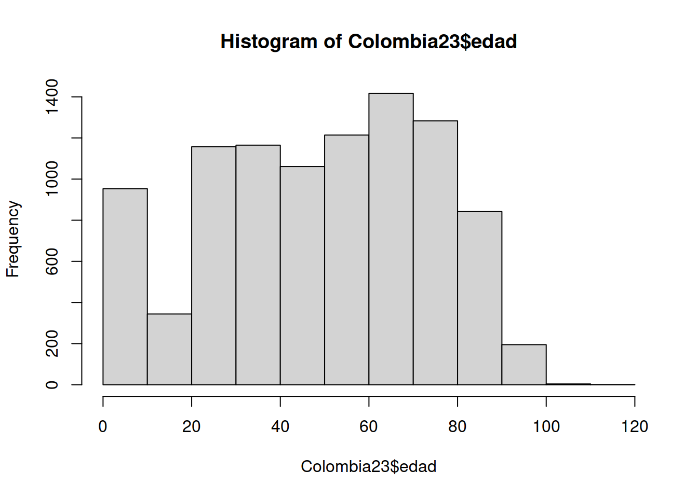
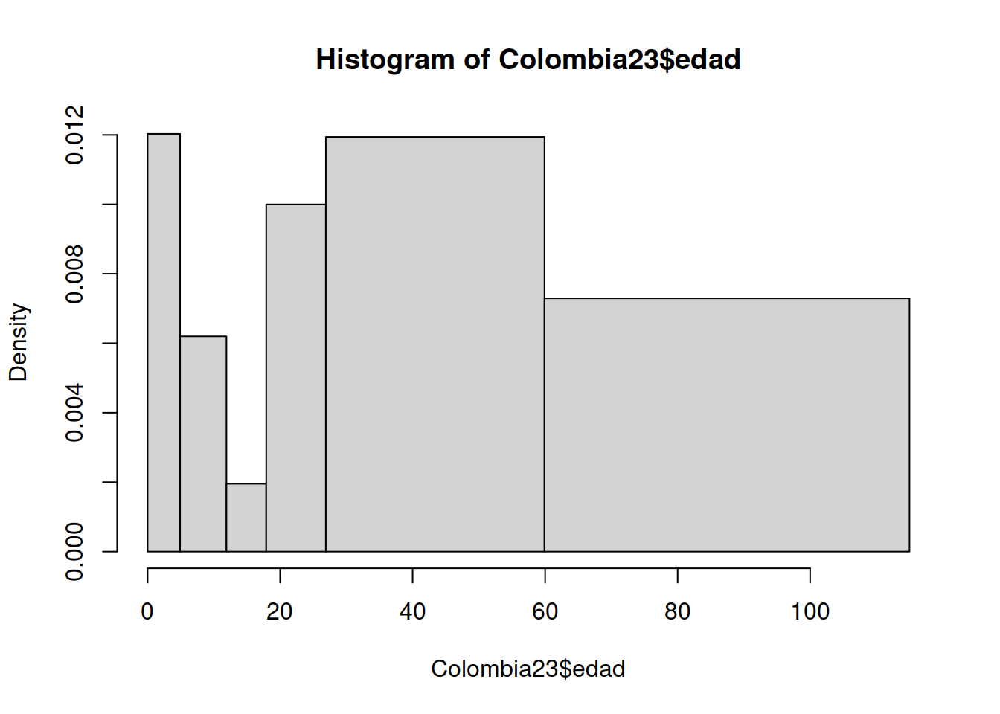

Unidad 1.1
dgonzalez

1. Introducción
Al tener una base de datos se requiere resumirlos en una tabla o en indicadores que faciliten su análisis, dependiendo el tipo de variable ( cualitativas o cuantitativas) la tabla puede tener diferentes columnas.
En el caso de los indicadores las variables cualitativas se les resumen en el nivel con mayor frecuencias a la que se le llama MODA
Las variables cuantitativas tiene un gran número de indicadores que se dividien en tres categorias:
- Indicadores de tendencia central
- Indicadores de dispersión
- Indicadores de forma
A continuación se indica como realizar el proceso utilizando RStudio, bajo el supuesto que se cuenta con una base de datos que se ha importado en RStudio.


Instalación de summarytools
Uno de los paquetes de R utilizados para la construcción de tablas de frecuencia e indicadores descriptivos es summarytools, a continuación se comparte código para su instalación :
install.packages("remotes") # se puede tambien utulizar el paquete devtools
library(remotes)
install_github("rapporter/pander") # repositorio recomendado
install_github("dcomtois/summarytools", build_vignettes = TRUE)
# install.packages("remotes") # se puede tambien utulizar el paquete devtools
# library(remotes)
# install_github("rapporter/pander") # repositorio recomendado
# install_github("dcomtois/summarytools", build_vignettes = TRUE)2. Tablas de frecuencia
Resumir los datos en tablas facilita su análisis y también su representación gráfica. Varios gráficos están basados en tablas de frecuencia como veremos en la unidad 1.3
Tablas variables cualitativas
Iniciaremos con la construcción de tablas para variables cualitativas en escala nominal. Recordemos que las variables medidas en esta escala no presentan orden especial y en algunos casos son ordenadas de mayor a menor frecuencia
Utilizaremos en este caso la función table()
# Colombia=readRDS(file = "data/Colombia23.RDS")
table(Colombia23$ubicacion)
casa Casa Fallecido Hospital Hospital UCI N/A
12 9150 69 331 33 41 data(iris)
table(iris$Species)
setosa versicolor virginica
50 50 50 library(readr)
ventas <- read_csv("data/ventas.csv")
table(ventas$Metodo_Pago)
American Express Discover MasterCard Star Card
4 8 28 140
Visa
20 En todos los casos podemos elaborar una tabla acompañada con los porcentajes (frecuencia relativa)
Paquete flextable
install.packages("flextable")
library(flextable)ft1=table(ventas$Metodo_Pago)%>%
as.data.frame()
colnames(ft1)=c("Tipo de tarjeta", "Frecuencia Absoluta")
ft1=flextable(ft1)
set_flextable_defaults(
font.size = 10, font.family = "Helvetica",
font.color = "#333333",
table.layout = "fixed",
border.color = "gray",
padding.top = 3, padding.bottom = 3,
padding.left = 4, padding.right = 4)
ft1 <- ft1 %>%
width(j = 1, width = 2) %>%
width(j = 2, width = 1)
ft1Tipo de tarjeta | Frecuencia Absoluta |
|---|---|
American Express | 4 |
Discover | 8 |
MasterCard | 28 |
Star Card | 140 |
Visa | 20 |
El resultado corresponde a un conteo de cada uno de los valores de la
variable. En caso de que se requiera calcular la proporción que
corresponde cada caso utilizamos la función : prop.table()
y se la aplicamos a la tabla anterior
ft2=table(ventas$Metodo_Pago)%>%
prop.table() %>%
as.data.frame()
colnames(ft2)=c("Tipo de tarjeta", "Frecuencia relativa")
ft2=flextable(ft2)
set_flextable_defaults(
font.size = 10, font.family = "Helvetica",
font.color = "#333333",
table.layout = "fixed",
border.color = "gray",
padding.top = 3, padding.bottom = 3,
padding.left = 4, padding.right = 4)
ft2 <- ft2 %>%
width(j = 1, width = 2) %>%
width(j = 2, width = 1)
ft2Tipo de tarjeta | Frecuencia relativa |
|---|---|
American Express | 0.02 |
Discover | 0.04 |
MasterCard | 0.14 |
Star Card | 0.70 |
Visa | 0.10 |
Si utilizamos la función freq del paquete
summarytools, la salida es una tabla más elaborada
summarytools::freq(ventas$Metodo_Pago, cumul = F)Frequencies
ventas$Metodo_Pago
**Type:** Character
Freq % Valid % Valid Cum. % Total % Total Cum.
---------------------- ------ --------- -------------- --------- --------------
American Express 4 2.00 2.00 2.00 2.00
Discover 8 4.00 6.00 4.00 6.00
MasterCard 28 14.00 20.00 14.00 20.00
Star Card 140 70.00 90.00 70.00 90.00
Visa 20 10.00 100.00 10.00 100.00
<NA> 0 0.00 100.00
Total 200 100.00 100.00 100.00 100.00Tablas variables cuantitativas
Para el caso de las variables cuantitativas que presentan muchos valores difentes construir una tabla como las anteriores no tiene sentido, pues salen muchas categorias probablemente con frecuencia uno.
En este caso es necesario construir rangos que den sentido y que permitan resumir la información para una facil interpretación.
El ejemplo a continuación da cuenta de ello.
Supongamos que queremos analizar la variable edad y para ello debemos establecer los limites y cuantos intervalo vamos aconstruir. En este caso tenemos tres alternativas posible_
- Tomar los intervalos construidos en un estudio anterior con cual queremos comparar los nuestros
- Tomar intervalos de acuerdo a estudios anteriores o teorias sobre el tema
- Tomar intervalos de igual longitud. En este caso existen diferentes alternativas para establecer el numero de intervalos a construir. Uno de ellos indica como respuesta a este interrogante la formula construida por Sturgues (se puede conocer mediante la función nclass.Sturges(variable) ) que es utilizada por otras funcione en R
En el caso de la variable Edad podríamos proceder así:
Consultados los ciclos de la vida tenemos: + Primera Infancia (0-5 años) + Infancia (6 - 11 años) + Adolescencia (12 - 17 años) + Juventud (18 - 26 años) + Adultez (27- 59 años) + Persona Mayor (60 años o mas) envejecimiento y vejez
Colombia23$edadR[Colombia23$edad<=5]="1. (0 a 5 años]"
Colombia23$edadR[Colombia23$edad>5 & Colombia23$edad<=11]="2. (5 a 11 años]"
Colombia23$edadR[Colombia23$edad>11 & Colombia23$edad<=17]="3. (11 a 17 años]"
Colombia23$edadR[Colombia23$edad>17 & Colombia23$edad<=26]="4. (17 a 26 años]"
Colombia23$edadR[Colombia23$edad>26 & Colombia23$edad<=59]="5. (26 a 59 años]"
Colombia23$edadR[Colombia23$edad>59]="6. (Más de 59 años]"
summarytools::freq(Colombia23$edadR)Frequencies
Colombia23$edadR
**Type:** Character
Freq % Valid % Valid Cum. % Total % Total Cum.
------------------------- ------ --------- -------------- --------- --------------
1. (0 a 5 años] 310 3.22 3.22 3.22 3.22
3. (11 a 17 años] 114 1.18 4.40 1.18 4.40
4. (17 a 26 años] 993 10.31 14.71 10.31 14.71
5. (26 a 59 años] 4094 42.49 57.19 42.49 57.19
6. (Más de 59 años] 4125 42.81 100.00 42.81 100.00
<NA> 0 0.00 100.00
Total 9636 100.00 100.00 100.00 100.00Esta tabla nos permite identificar los rangos de mayor frecuencia
Tambien podemo realizar una tabla sin tener que realizar la recodificación. Esto se logra con la función hist()
Colombia23$edad <- as.numeric(Colombia23$edad)
h=hist(Colombia23$edad)
h$breaks # puntos de corte [1] 0 10 20 30 40 50 60 70 80 90 100 110 120h$counts # frecuencias absolutas en cada intervalo [1] 953 344 1157 1165 1061 1214 1417 1283 842 195 4 1h$density # densidad en cada intervalo [1] 9.889996e-03 3.569946e-03 1.200706e-02 1.209008e-02 1.101079e-02
[6] 1.259859e-02 1.470527e-02 1.331465e-02 8.738066e-03 2.023661e-03
[11] 4.151100e-05 1.037775e-05Seria de interés tambien construir una tabla con las edades de las personas fallecidas por covid en Colombia, para lo cual debemos primero seleccionar la base de datos de las fallecidas y luego en ello construir la tabla
En este caso vamos a seleccionar los rangos de edad y luego construimos la tabla
Fallecidos=subset(Colombia23, estado=="fallecido")
breaks=seq(0,110, by=20)
Edad.fallecidos=cut(Fallecidos$edad, breaks)
summarytools::freq(Edad.fallecidos)Frequencies
Edad.fallecidos
**Type:** Factor (unordered)
Freq % Valid % Valid Cum. % Total % Total Cum.
-------------- ------ --------- -------------- --------- --------------
(0,20] 0 NaN NaN NaN NaN
(20,40] 0 NaN NaN NaN NaN
(40,60] 0 NaN NaN NaN NaN
(60,80] 0 NaN NaN NaN NaN
(80,100] 0 NaN NaN NaN NaN
<NA> 0 NaN NaN
Total 0 0.00 100.00 100.00 100.00O tambien
h=hist(Colombia23$edad, breaks = c(0,4.9, 11.9,17.9,26.9, 59.9,115))
# Con los valores contenidos en el objeto h construimos la tabla
LI=h$breaks[1:6]
LS=h$breaks[2:7]
FreAbs=h$counts
FreRel=round(h$counts/sum(h$counts),4)
FreAbAc=cumsum(FreAbs)
FreRAc=cumsum(FreRel)
data.frame(LI,LS,FreAbs,FreRel, FreAbAc, FreRAc) LI LS FreAbs FreRel FreAbAc FreRAc
1 0.0 4.9 568 0.0589 568 0.0589
2 4.9 11.9 418 0.0434 986 0.1023
3 11.9 17.9 113 0.0117 1099 0.1140
4 17.9 26.9 867 0.0900 1966 0.2040
5 26.9 59.9 3797 0.3940 5763 0.5980
6 59.9 115.0 3873 0.4019 9636 0.9999Tablas de doble entrada
table(Colombia23$ubicacion, Colombia23$estado)
Fallecido Grave leve Leve Moderado N/A
casa 0 0 12 0 0 0
Casa 0 0 0 9150 0 0
Fallecido 69 0 0 0 0 0
Hospital 0 0 0 0 331 0
Hospital UCI 0 33 0 0 0 0
N/A 0 0 0 0 0 41tabla1=table(Colombia23$ubicacion, Colombia23$estado) %>%
prop.table()*100
tabla1
Fallecido Grave leve Leve Moderado
casa 0.0000000 0.0000000 0.1245330 0.0000000 0.0000000
Casa 0.0000000 0.0000000 0.0000000 94.9564134 0.0000000
Fallecido 0.7160648 0.0000000 0.0000000 0.0000000 0.0000000
Hospital 0.0000000 0.0000000 0.0000000 0.0000000 3.4350353
Hospital UCI 0.0000000 0.3424658 0.0000000 0.0000000 0.0000000
N/A 0.0000000 0.0000000 0.0000000 0.0000000 0.0000000
N/A
casa 0.0000000
Casa 0.0000000
Fallecido 0.0000000
Hospital 0.0000000
Hospital UCI 0.0000000
N/A 0.42548783. Indicadores descriptivos
Un indicador es un numero que resumen o representa un grupo de valores. El poder resumir una gran cantidad de valores en unos pocos, facilita el realizar un análisis de ellos
En el caso de las variables cualitativas en escala nominal, se pueden representar por el valor mas frecuente. A este valor se le conoce como Moda y lo podemos ver claramente en una tabla de frecuencias
En el caso de las variables cuantitativas tenemos varias alternativas para construirlos
Utilizando la función summary :
summary(Colombia23$edad) Min. 1st Qu. Median Mean 3rd Qu. Max.
1.00 30.00 52.00 49.44 70.00 112.00 Utilizando la función describe del pquete psych :
psych::describe(Colombia23$edad) vars n mean sd median trimmed mad min max range skew kurtosis se
X1 1 9636 49.44 24.99 52 50.4 29.65 1 112 111 -0.24 -0.91 0.25Utilizando la función describe.by del paquete
psych, que nos permite el calculo de las descritivas para
varios grupos :
psych::describe.by(Colombia23$edad, group = Colombia23$ubicacion)
Descriptive statistics by group
group: casa
vars n mean sd median trimmed mad min max range skew kurtosis se
X1 1 12 54.08 16.08 47.5 54.2 18.53 29 78 49 0.19 -1.42 4.64
------------------------------------------------------------
group: Casa
vars n mean sd median trimmed mad min max range skew kurtosis se
X1 1 9150 49.02 24.59 51 49.91 28.17 1 103 102 -0.22 -0.88 0.26
------------------------------------------------------------
group: Fallecido
vars n mean sd median trimmed mad min max range skew kurtosis se
X1 1 69 76.9 14.51 81 78.51 8.9 31 99 68 -1.25 1.52 1.75
------------------------------------------------------------
group: Hospital
vars n mean sd median trimmed mad min max range skew kurtosis se
X1 1 331 52.1 32.43 65 53.47 31.13 1 112 111 -0.42 -1.37 1.78
------------------------------------------------------------
group: Hospital UCI
vars n mean sd median trimmed mad min max range skew kurtosis se
X1 1 33 55.33 30.24 70 57.67 17.79 2 91 89 -0.7 -1.23 5.26
------------------------------------------------------------
group: N/A
vars n mean sd median trimmed mad min max range skew kurtosis se
X1 1 41 69.98 18.39 74 72.03 16.31 18 96 78 -0.92 0.06 2.87Utilizando la función descr del paquete
summaytools :
summarytools::descr(Colombia23$edad)Descriptive Statistics
Colombia23$edad
**N:** 9636
edad
----------------- ---------
Mean 49.44
Std.Dev 24.99
Min 1.00
Q1 30.00
Median 52.00
Q3 70.00
Max 112.00
MAD 29.65
IQR 40.00
CV 0.51
Skewness -0.24
SE.Skewness 0.02
Kurtosis -0.91
N.Valid 9636.00
Pct.Valid 100.00Tablas con gtsummary
YA ESTAMOS LISTOS PARA INTERPRETAR LA INFORMACIÓN !!
4. Documentos pdf con Rmd
A través de RStudio se pueden construir documentos en formatos PDF, DOC, HTML entre otros. En esta ocasión se describe como realizar un informe utilizando para ello un archivo Rmd en RStudio.
Inicialmente en RStudio abrimos un nuevo archivo en formato Rmd
File/New File/ R Markdown…
Al hacerlo se despliega la siguiente ventana

En este caso seleccionamos PDF para abrir una plantilla que nos ofrece el programa para orientar nuestros primeros pasos
---
title: "Untitled"
author: "dgonzalez"
date: "3/2/2022"
output: pdf_document
---El primer bloque contiene información sobre el titulo del documento, el autor, la fecha y el formato de salida
Podemos tambien abregar un subtitulo: subtitle: “Subtitulo”
Despues de este bloque encontramos el cuerpo del documento que puede contener texto escrito de manera normal, código html, código Markdown y LaTeX
Algunas de las principales instrucciones para empezar son
Titulos
# Título 1
## Título 2
### Título 3
#### Título 4
##### Título 5
##### Títuñlo 6Listas
+ Punto 1
+ Punto 2
+ Punto 3
+ Punto 3.1
+ Punto 3.2Tambien se pueden hacer numerada
1. Punto 1
2. Punto 2
3. Punto 3- Punto 1
- Punto 2
- Punto 3
Permite tambien escribir ecuaciones en codigo LaTeX, como por ejemplo
$$\dfrac{1}{n}\sum_{i=1}^{n} x_{i} = \bar{x}$$\[\dfrac{1}{n}\sum_{i=1}^{n} x_{i} = \bar{x}\]
Una de sus principales ventajas es el de permitir correr código R y de otros lenguajes como Phyton, SQL, entre otros
Para ello utilizamos el botón +c ubicado en la barra superior de la ventana Source

Dentro de este bloque podemos correr codigo R y asi ubicar dentro del documento tablas, indicadores o gráficos

En la siguiente página pueden encotrar resumen de varios paquetes de R dentro de los cuales está RMardown
https://www.rstudio.com/resources/cheatsheets/
Otros formatos de tablas
df <- data.frame(
id = 1:10,
nombre = c("Juan", "Carlos", "James", "David", "Jenny", "Harold", "Leonardo", "John", "Ana", "Luz"),
edad = c(20, 25, 22, 28, 21, 23, 25, 20, 21, 20),
grado = c("C", "A", "A", "C", "B", "B", "A", "C", "C", "C"),
Examen1 = c(3.8, 4.1, 4.0, 3.9, 4.0, 4.3, 3.6, 3.7, 3.8, 3.8),
Examen2 = c(3.9, 3.9, 4.0, 3.9, 3.8, 3.6, 4.0, 4.0, 3.9, 3.8),
Promedio = c(3.9, 4.0, 4.1, 3.6, 3.7, 4.6, 3.5, 3.6, 3.8, 3.7),
Entrevista = c(TRUE, FALSE, TRUE, FALSE, TRUE, TRUE, TRUE, FALSE, FALSE, FALSE),
stringsAsFactors = FALSE
)
df id nombre edad grado Examen1 Examen2 Promedio Entrevista
1 1 Juan 20 C 3.8 3.9 3.9 TRUE
2 2 Carlos 25 A 4.1 3.9 4.0 FALSE
3 3 James 22 A 4.0 4.0 4.1 TRUE
4 4 David 28 C 3.9 3.9 3.6 FALSE
5 5 Jenny 21 B 4.0 3.8 3.7 TRUE
6 6 Harold 23 B 4.3 3.6 4.6 TRUE
7 7 Leonardo 25 A 3.6 4.0 3.5 TRUE
8 8 John 20 C 3.7 4.0 3.6 FALSE
9 9 Ana 21 C 3.8 3.9 3.8 FALSE
10 10 Luz 20 C 3.8 3.8 3.7 FALSE# colnames(df1)=c("Id", "Nombre", "Edad","grado", "Nota1", "Nota2", "Nota_Final", "Entrevista")
df1=flextable(df)
df1id | nombre | edad | grado | Examen1 | Examen2 | Promedio | Entrevista |
|---|---|---|---|---|---|---|---|
1 | Juan | 20 | C | 3.8 | 3.9 | 3.9 | TRUE |
2 | Carlos | 25 | A | 4.1 | 3.9 | 4.0 | FALSE |
3 | James | 22 | A | 4.0 | 4.0 | 4.1 | TRUE |
4 | David | 28 | C | 3.9 | 3.9 | 3.6 | FALSE |
5 | Jenny | 21 | B | 4.0 | 3.8 | 3.7 | TRUE |
6 | Harold | 23 | B | 4.3 | 3.6 | 4.6 | TRUE |
7 | Leonardo | 25 | A | 3.6 | 4.0 | 3.5 | TRUE |
8 | John | 20 | C | 3.7 | 4.0 | 3.6 | FALSE |
9 | Ana | 21 | C | 3.8 | 3.9 | 3.8 | FALSE |
10 | Luz | 20 | C | 3.8 | 3.8 | 3.7 | FALSE |
library(formattable)
formattable(df, list(
edad = color_tile("white", "orange"),
grado = formatter("span",
style = x ~ ifelse(x == "A",
style(color = "green", font.weight = "bold"), NA)),
area(col = c("Examen1", "Examen2")) ~ normalize_bar("#C4D8F3", 0.2),
Promedio = formatter("span",
style = x ~ style(color = ifelse(rank(-x) <= 3, "green", "gray")),
x ~ sprintf("%.2f (rank: %.2f)", x, rank(-x))),
Entrevista = formatter("span",
style = x ~ style(color = ifelse(x, "green", "red")),
x ~ icontext(ifelse(x, "ok", "remove"), ifelse(x, "Sí", "No")))
))| id | nombre | edad | grado | Examen1 | Examen2 | Promedio | Entrevista |
|---|---|---|---|---|---|---|---|
| 1 | Juan | 20 | C | 3.8 | 3.9 | 3.90 (rank: 4.00) | Sí |
| 2 | Carlos | 25 | A | 4.1 | 3.9 | 4.00 (rank: 3.00) | No |
| 3 | James | 22 | A | 4.0 | 4.0 | 4.10 (rank: 2.00) | Sí |
| 4 | David | 28 | C | 3.9 | 3.9 | 3.60 (rank: 8.50) | No |
| 5 | Jenny | 21 | B | 4.0 | 3.8 | 3.70 (rank: 6.50) | Sí |
| 6 | Harold | 23 | B | 4.3 | 3.6 | 4.60 (rank: 1.00) | Sí |
| 7 | Leonardo | 25 | A | 3.6 | 4.0 | 3.50 (rank: 10.00) | Sí |
| 8 | John | 20 | C | 3.7 | 4.0 | 3.60 (rank: 8.50) | No |
| 9 | Ana | 21 | C | 3.8 | 3.9 | 3.80 (rank: 5.00) | No |
| 10 | Luz | 20 | C | 3.8 | 3.8 | 3.70 (rank: 6.50) | No |